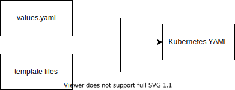

Helm
Helm is a package manager for Kubernetes. We use two of it's features:
- Generating YAML files from templates
- Having charts that require other charts for Gitops
Charts
Helm organizes configuration files into folders named Charts. Charts have a few key files:
- Chart.yaml which contains metadata about the chart (name etc...)
- ./templates folder where the templates live
- values.yaml a data file containing variables for a particular environment
- requirements.yaml - charts can depend on other charts. This file lists those dependencies
Templates
Instead of having YAML files, Helm uses YAML templates. A Helm template file looks like this:
apiVersion: v1
kind: Service
metadata:
name: {{ include "starter-kit.fullname" . }}
labels:
app.kubernetes.io/name: {{ include "starter-kit.name" . }}
helm.sh/chart: {{ include "starter-kit.chart" . }}
app.kubernetes.io/instance: {{ .Release.Name }}
app: {{ .Release.Name }}
spec:
type: {{ .Values.service.type }}
ports:
- port: {{ .Values.service.port }}
targetPort: {{ .Values.image.port }}
protocol: TCP
name: http
selector:
app.kubernetes.io/name: {{ include "starter-kit.name" . }}
app.kubernetes.io/instance: {{ .Release.Name }}
Notice how it's like YAML, but with {{ }} placeholders.
Then there's a file named values.yaml, which might look like this:
global: {}
replicaCount: 1
logLevel: "debug"
image:
repository: replace
tag: replace
pullPolicy: IfNotPresent
port: 8080
# etc...
Helm can generate Kubernetes YAML files by rendering the template using the values from values.yaml like so:
helm template <release-name> ./path/to/chart
This will print YAML to the command line.

Requirements Files
If a Helm chart has a requirements.yaml file, it will look like this:
dependencies:
- name: react-intro
version: 0.0.1
repository: >-
http://artifactory-artifactory.tools:8082/artifactory/generic-local/react-intro-01-dev
When a Helm chart is applied, it combines all of the configs from the dependencies, plus any files it has.

Pre-Built Helm Charts
You can find pre-built Helm charts that work with the IBM Toolkit by going here:
https://github.com/IBM?q=template&type=&language=&sort=
A few common ones are:
- https://github.com/IBM/template-node-react
- https://github.com/IBM/template-node-typescript
- https://github.com/IBM/template-java-spring
Copy the chart/base directory and put it in your own React / Java app.